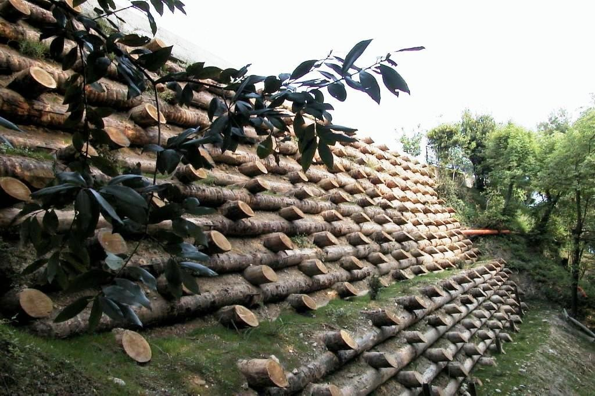
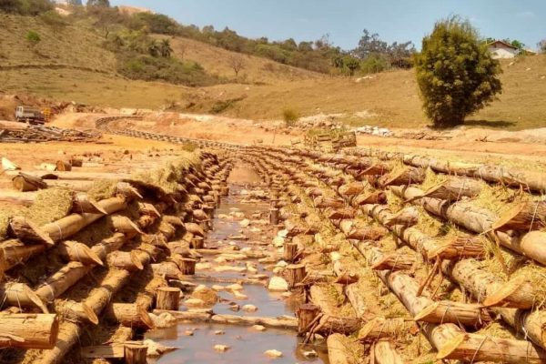
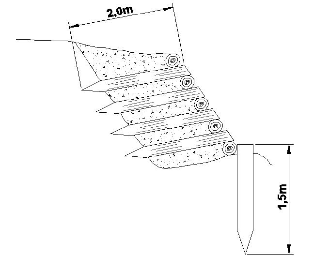
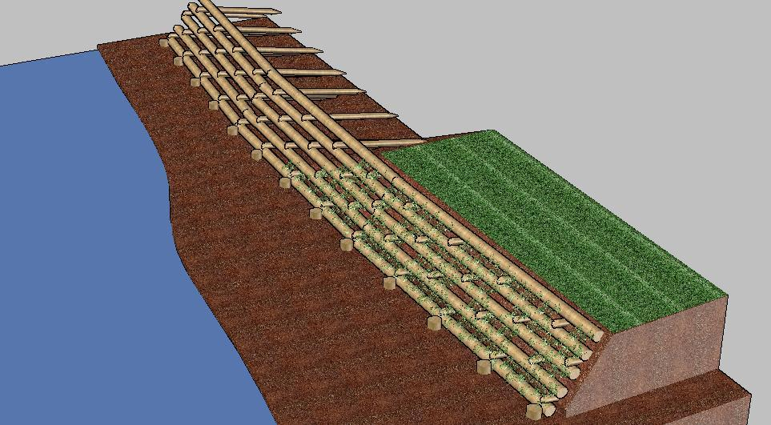
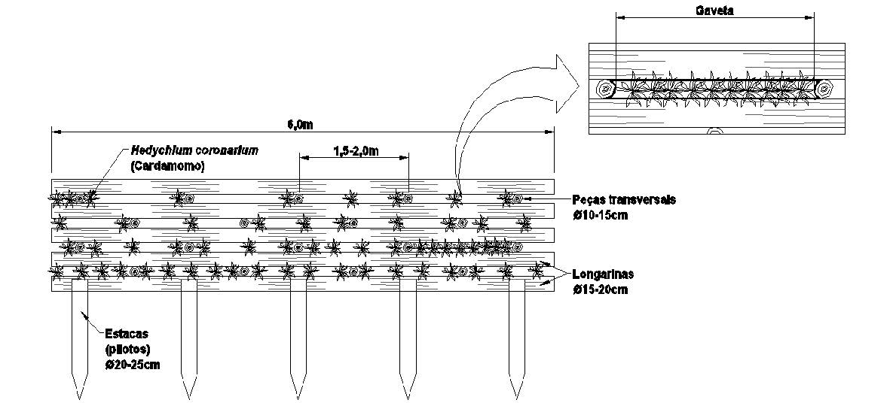

16 Parede Krainer
17 Parede Krainer
A parede Krainer (Krainer wall ou crib wall) é uma estrutura de contenção em grelha de troncos de madeira preenchida com solo e vegetação. Originária dos Alpes austríacos (região da Caríntia), foi desenvolvida para estabilizar encostas montanhosas e margens de rios torrenciais, sendo posteriormente adaptada para uso em regiões tropicais utilizando madeiras locais (eucalipto, sabiá, acácia). O princípio construtivo é elegante em sua simplicidade: troncos dispostos em grelha tridimensional formam células prismáticas que são preenchidas com solo, funcionando como uma estrutura de contenção por gravidade (resistência pelo peso próprio) com capacidade de autovegetação nas faces e no topo.
A principal vantagem da parede Krainer sobre muros de concreto armado ou gabiões é a integração paisagística: após 2–3 anos, a vegetação cobre completamente a estrutura, que se torna indistinguível de um talude natural vegetado. Essa característica é particularmente valorizada em áreas de proteção ambiental, margens de rios em zonas urbanas e taludes viários em regiões turísticas. A Figura 17.1 mostra uma parede Krainer instalada, onde se observa a grelha de troncos e o preenchimento com solo, com vegetação em processo de colonização da face frontal.

17.1 Tipologia
A parede Krainer pode ser construída em duas configurações estruturais, cuja escolha depende da altura necessária e das solicitações mecânicas. A Figura 17.2 mostra uma parede Krainer dupla em estágio avançado de colonização vegetal, enquanto a Figura 17.3 apresenta o corte transversal esquemático que detalha o arranjo construtivo dos troncos e o preenchimento com solo.


17.1.1 Parede Krainer Simples
A parede simples consiste em uma grelha de troncos em uma única direção (longitudinal), apoiados em troncos transversais curtos que funcionam como consolos. A altura máxima recomendada é de 2,0 m, adequada para estabilização de pequenos taludes, bases de encostas e cabeceiras de voçorocas. A profundidade de embutimento (comprimento dos troncos transversais) deve ser de pelo menos 0,5× a altura, garantindo ancoragem suficiente no maciço de solo a montante.
17.1.2 Parede Krainer Dupla
A parede dupla emprega grelha de troncos em duas direções (longitudinal + transversal), formando células prismáticas tridimensionais de alta estabilidade mecânica. A altura máxima recomendada é de 4,0 m, sendo a configuração adequada para margens fluviais, taludes viários de grande altura e encostas com risco geotécnico. A robustez estrutural é significativamente superior à da parede simples, pois os troncos transversais atravessam toda a seção da parede (não são consolos) e criam intertravamento mecânico em ambas as direções.
17.2 Dimensionamento Estrutural
O dimensionamento da parede Krainer segue os princípios das estruturas de contenção por gravidade, de forma análoga ao gabião vivo (ver Capítulo 16).
17.2.1 Geometria
A base (\(B\)) da parede deve ser igual ou superior a \(0{,}5 \cdot H\) (mínimo absoluto de 1,0 m), onde \(H\) é a altura total da parede. A altura máxima (\(H\)) é de 4,0 m para paredes duplas e 2,0 m para simples. A face frontal deve ter inclinação de 10 a 15° em relação à vertical (inclinada para trás), o que desloca o centro de gravidade para o interior do maciço e melhora a segurança ao tombamento. Os troncos devem ter diâmetro de 15–30 cm (diâmetros maiores para paredes mais altas), com espaçamento entre troncos longitudinais de 30–60 cm (vãos que permitem a passagem de vegetação e drenagem sem comprometer a retenção do solo de preenchimento).
17.2.2 Verificação de Estabilidade
As verificações de estabilidade seguem as mesmas expressões apresentadas para o gabião vivo
\[ FS_{tomb} \geq 1{,}5 \quad;\quad FS_{desl} \geq 1{,}5 \quad;\quad FS_{cap} \geq 3{,}0 \]
17.2.3 Peso Específico da Estrutura
Para o cálculo das forças resistentes, é necessário determinar o peso específico aparente da estrutura preenchida (\(\gamma_{ap}\)), que depende da proporção volumétrica de madeira e solo no interior da grelha
\[ \gamma_{ap} = n_{madeira} \cdot \gamma_{madeira} + (1 - n_{madeira}) \cdot \gamma_{solo} \]
onde \(n_{madeira}\) é a fração volumétrica da madeira (tipicamente 15–25%, dependendo do diâmetro dos troncos e do espaçamento), \(\gamma_{madeira}\) é o peso específico da madeira (5–10 kN/m³, conforme a espécie) e \(\gamma_{solo}\) é o peso específico do solo de preenchimento compactado (16–20 kN/m³). Para uma parede com 20% de madeira de eucalipto (\(\gamma = 7\) kN/m³) e solo compactado (\(\gamma = 18\) kN/m³), \(\gamma_{ap} \approx 15{,}8\) kN/m³.
17.3 Seleção de Madeiras Tropicais
A durabilidade da madeira é o fator limitante da vida útil da componente estrutural da parede Krainer. A seleção deve considerar a durabilidade natural (resistência à biodeterioração sem tratamento), a densidade (que influencia o peso específico e a resistência mecânica) e a disponibilidade regional. A Tabela 17.1 compara as principais opções para o contexto tropical brasileiro.
| Espécie | Densidade (kg/m³) | Durabilidade natural | Disponibilidade |
|---|---|---|---|
| Eucalyptus spp. | 550–800 | 5–15 anos | Alta |
| Mimosa caesalpiniifolia (sabiá) | 800–1.000 | 10–20 anos | Média (Nordeste) |
| Acacia mangium | 500–650 | 5–10 anos | Média |
| Bambusa spp. (bambu) | 400–700 | 3–5 anos (tratado) | Alta |
| Tectona grandis (teca) | 550–700 | 20+ anos | Baixa |
No contexto tropical brasileiro, o eucalipto tratado é a escolha mais frequente pela combinação de alta disponibilidade e custo acessível, embora sua durabilidade natural seja inferior à do sabiá (Mimosa caesalpiniifolia), espécie nativa do Nordeste cuja madeira extremamente densa (800–1.000 kg/m³) dispensa tratamento químico em muitas aplicações. O bambu, apesar de abundante, é recomendado somente para estruturas temporárias (3–5 anos mesmo com tratamento), enquanto a teca oferece a melhor durabilidade natural (20+ anos), porém com disponibilidade e custo limitantes para projetos de grande escala.
Madeiras não naturalmente duráveis devem receber tratamento com CCA (Arseniato de Cobre Cromatado) ou CCB (Borato de Cobre Cromatado) em autoclave, que impregna a madeira com sais metálicos fungicidas e inseticidas sob pressão, aumentando a durabilidade para 15–25 anos. O tratamento deve ser realizado com a madeira já cortada nas dimensões de projeto, pois cortes posteriores expõem o cerne não tratado à biodeterioração.
17.4 Estacas Vivas
A inserção de estacas vivas entre os troncos é o elemento que diferencia a parede Krainer convencional (estrutura exclusivamente de madeira morta) da versão de bioengenharia de solos. As estacas são segmentos de ramos de espécies com alta capacidade de propagação vegetativa, as mesmas empregadas em gabiões vivos e enrocamento vegetado (ver Capítulo 16 e Capítulo 14), com diâmetro de 3–8 cm e comprimento suficiente para transpor toda a seção da parede mais 30 cm para cada lado (garantindo contato com o solo natural a montante e exposição à luz na face frontal). As estacas são inseridas horizontalmente entre camadas de troncos, em densidade de 3–5 estacas por m² de face, preferencialmente durante o período de dormência vegetativa (estação seca) para maximizar as taxas de enraizamento. Com o brotamento e o desenvolvimento radicular, as estacas desempenham três funções simultâneas: reforço mecânico do solo de preenchimento por coesão radicular, drenagem biológica por evapotranspiração e integração paisagística progressiva.
17.5 Construção
O arranjo tridimensional da estrutura pode ser visualizado na Figura 17.4, enquanto a Figura 17.5 detalha as peças componentes individuais (troncos longitudinais, transversais e estacas vivas) e sua posição relativa no conjunto.


A construção segue uma sequência de empilhamento por camadas. A primeira etapa consiste na escavação da fundação, uma trincheira de encastramento com profundidade de 40–60 cm e largura igual à base de projeto (\(B\)), nivelada e compactada para distribuir as tensões de contato. Na segunda etapa, os troncos longitudinais de base são posicionados na trincheira com o espaçamento definido (30–60 cm), e os troncos transversais são apoiados perpendicularmente sobre eles, fixados com pregos de aço galvanizado (\(\varnothing\) 8–10 mm) ou parafusos estruturais nos pontos de cruzamento. Na terceira etapa, as células formadas pela grelha são preenchidas com solo vegetal em camadas de 15–20 cm, levemente compactadas (compactação excessiva impede o desenvolvimento radicular das estacas vivas). A quarta etapa consiste na inserção horizontal das estacas vivas entre os troncos, com a extremidade basal voltada para o interior do maciço (contato com umidade) e a extremidade apical ligeiramente projetada na face frontal. Esse ciclo de empilhamento (troncos → fixação → preenchimento → estacas vivas) é repetido até atingir a altura de projeto, finalizando com o plantio de gramíneas e arbustos no topo e nas faces expostas para proteção superficial imediata contra erosão laminar.
17.6 Drenagem
A parede Krainer é intrinsecamente autordrenante graças aos espaços entre troncos, que funcionam como canais de percolação distribuídos ao longo de toda a face frontal, impedindo o acúmulo de poropressões positivas no interior da estrutura (fator crítico de instabilidade em muros de arrimo convencionais). No entanto, em solos com alto teor de finos (siltes e argilas dispersivas), os espaços entre troncos podem ser gradualmente colmatados pelo carreamento de partículas finas, reduzindo a capacidade drenante. Para esses casos, recomenda-se a instalação de barbacãs de PVC (\(\varnothing\) 50 mm) a cada 2–3 m² de face, com inclinação descendente de 5° para o exterior, além de uma camada de brita ou manta geotêxtil não tecida na interface entre o solo de preenchimento e a face frontal da parede, funcionando como filtro que retém finos mas permite a passagem de água.
17.7 Aplicações
A Tabela 17.2 sintetiza as aplicações típicas da parede Krainer, indicando a altura usual e o tipo de parede recomendado para cada cenário. A versatilidade da técnica permite seu emprego desde pequenas intervenções em cabeceiras de voçorocas até obras de maior porte em margens fluviais, sempre com a vantagem da progressiva integração paisagística que elimina a necessidade de revestimentos estéticos posteriores.
| Aplicação | Altura típica | Tipo de parede | Observação |
|---|---|---|---|
| Margens de rios | 1,5–3,0 m | Dupla | Exige proteção de base contra solapamento |
| Taludes viários | 1,0–2,5 m | Simples ou dupla | Compatível com paisagismo rodoviário |
| Estabilização de encostas | 2,0–4,0 m | Dupla | Pode ser escalonada em bancadas |
| Controle de voçorocas | 1,0–2,0 m | Simples | Associar a paliçadas a montante (Capítulo 9) |